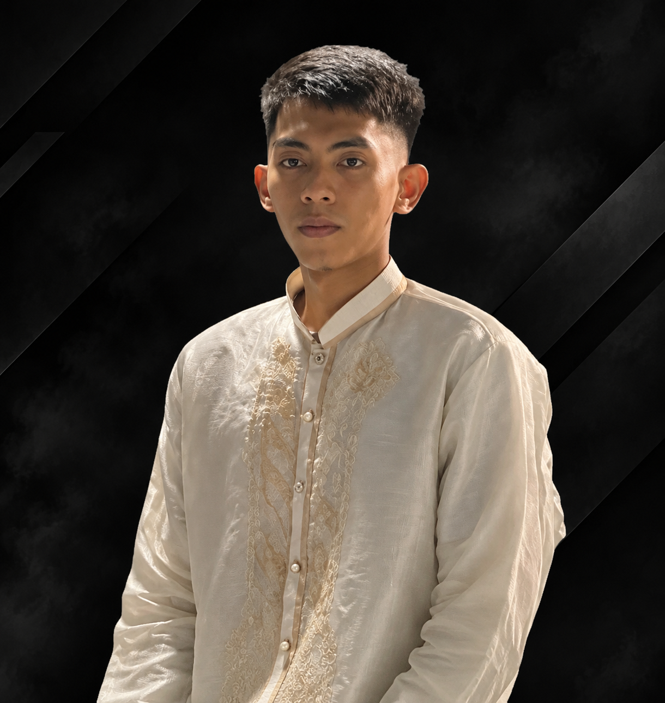
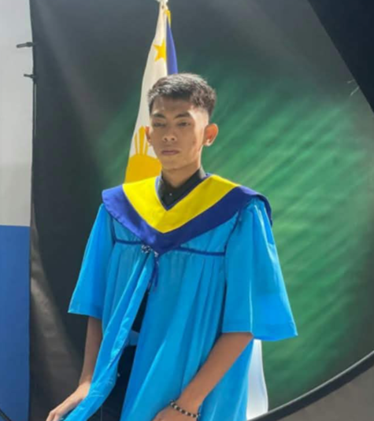
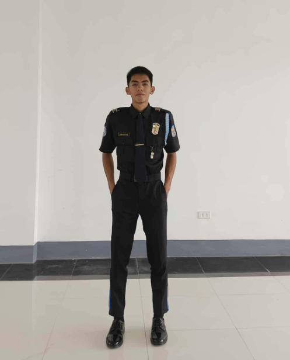
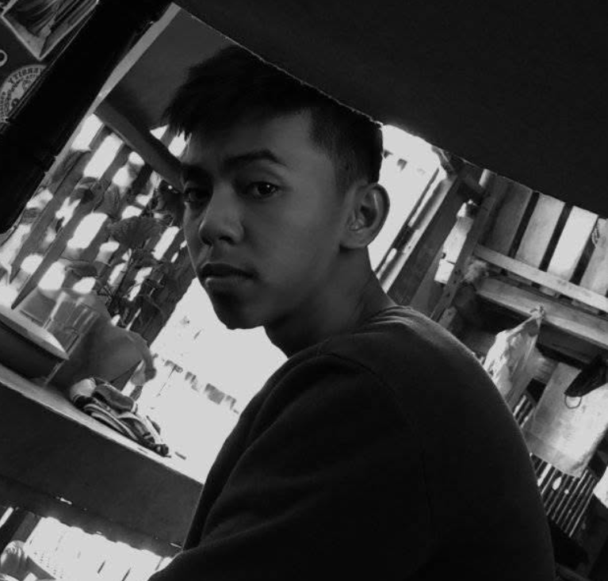

2022 — 2026
EDUCATION
↗
Bachelor of Science in Criminology
Sibugay Technical Institute Incorporated
PERSONAL PORTFOLIO 2026
DISCIPLINE. CHARACTER. PURPOSE.
Grounded in discipline. Driven by purpose.
Always ready to learn, serve, and grow.

A LITTLE INTRODUCTION
I am Vendel B. Abante — a responsible, hardworking, and dedicated individual who values discipline, honesty, and continuous learning.
With an academic background in Criminology, I have developed an understanding of law enforcement, public safety, and criminal justice. I also have practical knowledge of Shielded Metal Arc Welding (SMAW), gained during my Senior High School years.
I welcome new challenges, work independently when needed, and cooperate with others to achieve shared goals.
MY PERSONAL PHILOSOPHY
Every step is a chance to learn, contribute, and become better.
Sibugay Technical Institute Incorporated
Kabasalan National High School
Assisted with checking drivers’ licenses, monitoring traffic compliance, and supporting public service activities.
Assisted customers, organized products, maintained store order, and supported daily sales activities.
CAPABILITIES
A mix of knowledge, practical ability, and personal values built through education and experience.
Criminal investigation · Law enforcement · Crime prevention · Public safety · Criminal justice · Report writing · Observation
SMAW welding · Welding techniques · Metal fabrication · Metal cutting and grinding · Equipment handling · Welding safety
Communication · Teamwork · Time management · Problem-solving · Discipline · Responsibility · Adaptability
English — Native Tagalog — High level
A few snapshots from the experiences that continue to shape me. (Please click the image)



OPEN TO OPPORTUNITIES